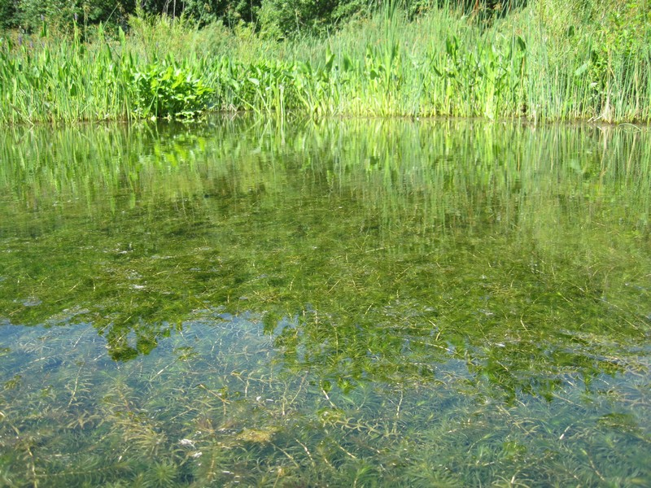
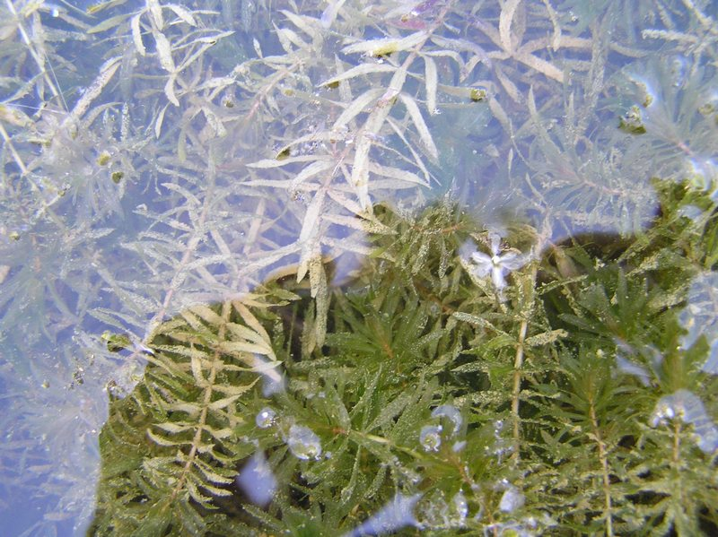
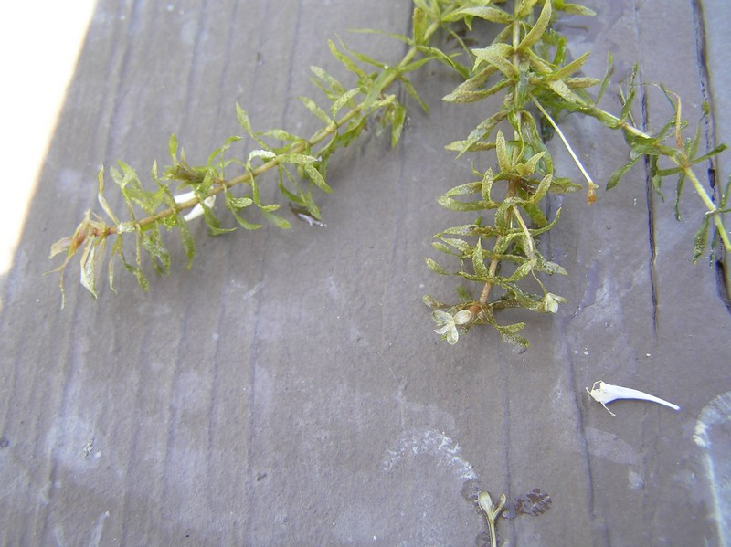
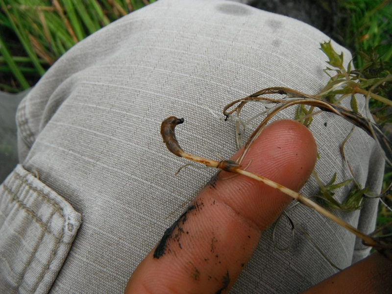

photo: Cleveland Metroparks
Hydrilla (Hydrilla verticillata)
Cleveland Metroparks |
Cleveland Metroparks |
 Cleveland Metroparks |
Cleveland Metroparks |
Cleveland Metroparks |
{kind=link}
{kind=link}
{kind=link}
{kind=link}
Form:
Submerged, aquatic perennial herb that can grow from depths of 20’. The plants have both a monoecious and a dioecious form.
Leaves:
The leaves of the plants are 0.07-0.15” wide (down to 0.04”) on monoecious plants) and are 0.2-0.8” long. The leaves are whorlled around the stem, with 3-8 leaves per whorl. There can be "sharp" spines of variable size along the margins of the leaves, giving them a toothed appearance. The leaves have a midrib which is reddish in color. This plant has various methods of reproduction.
Flowers:
The monoecious form of the plant produces female flowers that have three translucent petals that may contain a few red streaks. These flowers are 0.4-2” long and 0.15-0.3” wide. There are also three sepals that are white in color. The flowers are attached to the axils of the leaves by a long hypanthium. The male flowers also have three petals that are around 0.07” long and are colored anywhere from white to red. There are three white, red or brown sepals. These flowers are short stalked, detaching from the plant and floating to the water surface. The dioecious plants in the U.S. so far are female (however the hydrilla collected in Connecticut did not have flowers present).
Fruits & Seeds:
Another reproductive structure which makes these plants a successful invaders are the stem tubers (turions). The stem tubers are bud-like structures that are produced along the stems of the plant, and can vary in color from dark green, to grey to whitish. They are 0.25” long and often appear spiny. These structures can break off of the plant and survive the winter in the sediment at the bottom of waterbodies. Tubers are also another way in which these plants spread. These tubers form at the end of the rhizomes of the plant and are 0.2-0.4” long and white or yellow in color.
Similar Species:
Brazilian waterweed (Egeria densa) non-native
Canadian waterweed (Elodea Canadensis) native
St. John (Elodea nuttallii) native
Tier 1 - Early Detection/Rapid Response
These species are known to be highly invasive in natural areas, but are not yet widespread in Cleveland Metroparks. With Limited distrabution, immediate action will minimize management cost and long-term ecological impact of these aggressive species.
Action: A GPS point is taken and the Invasive Plant Coordinator should be notified, so the Invasive Plant Management Crew can respond accordingly.
For more information on how hydrilla is being handled throughout Cleveland Metroparks click here.